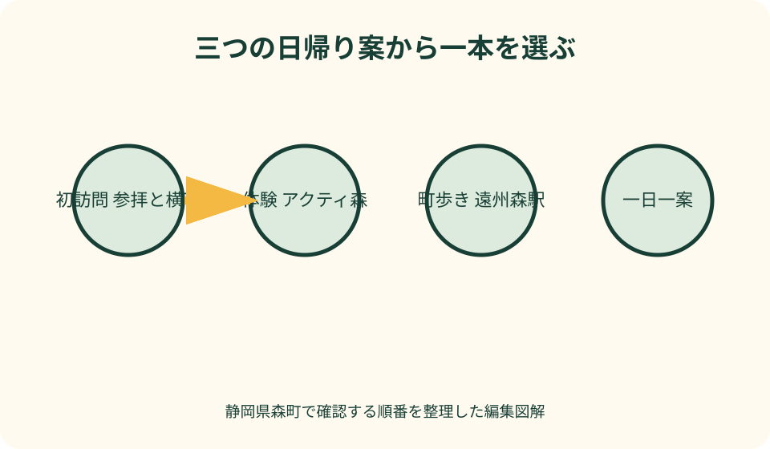
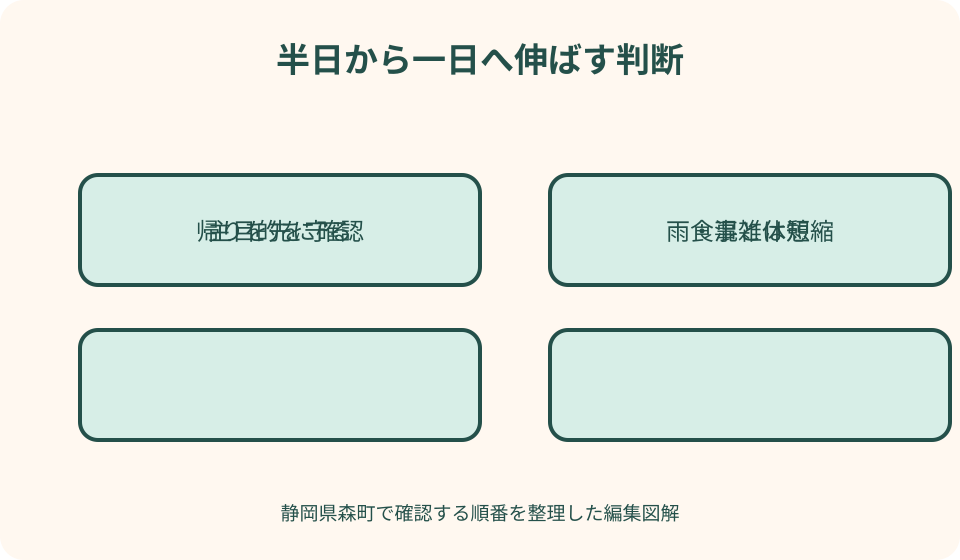

森町観光・モデルコース｜最終確認 2026-08-10
静岡県森町の日帰り観光モデルコース｜初訪問・体験・町歩きから一案を選ぶ
静岡県森町の日帰り観光は、名所を数多く回るより、訪問の軸を一つ決める方が土地の違いを理解できます。初訪問なら小國神社とことまち横丁、ものづくりや自然体験ならアクティ森、鉄道と町並みなら遠州森駅からの町歩きです。本記事の半日・一日は公式の所要時間ではなく、食事、休憩、混雑、受付、交通変更を吸収する編集上の余白です。三案を同じ日に制覇せず、当日の目的に合う一案を選びます。出発地からの到着時刻が違っても、見る場所を増減するのではなく、帰宅に必要な時間を先に残すことが基本です。

編集イラスト三案を一日で結ばず、目的から一つ選ぶ
森町は、小國神社のある一宮地区、アクティ森のある問詰方面、遠州森駅から歩く町なかで性格が違います。地図上の距離だけで連結すると、駐車、受付、乗換えに時間を使います。
参拝と門前の買い物を重視する人は初訪問案、作る・動く体験が目的なら体験案、鉄道と町並みをゆっくり見る人は町歩き案を選びます。同行者全員の第一希望を一つ聞きます。
半日は主目的、食事または休憩、帰路を守る最小構成です。一日は同じ地区で宮川散策、追加体験、寺社や菓子店などを一つ足します。余白を別地区への移動で埋めません。
本記事は筆者の旅行体験を順位付けしたものではありません。2026年8月10日に確認した森町、森町観光協会、各施設の案内を基に、当日確定すべき条件を分けています。
出発前は花・行事・交通を別々に確認する
森町公式の観光ページは施設や見どころを探す入口です。観光協会の施設一覧と年間行事は候補を広げますが、過去の開催月を今年の開催保証として使いません。
花は春の桜、初夏の花菖蒲やあじさい、秋の紅葉などで訪問先と見頃が異なります。開花は天候に左右され、照明や公開区域も年ごとに変わるため、当年の花情報へ戻ります。
催しの日は通常より人や車が増え、交通規制や臨時案内が出る場合があります。催しを目的にしない人も、観光協会の行事情報と施設のお知らせを見ます。
車なしは森町公式の公共交通ページから天竜浜名湖鉄道、路線バス、町営バス、タクシーの運行主体へ進みます。往路より先に帰りの便と運行日を確認します。
初訪問案は小國神社の参拝を主目的にする
初訪問案では、小國神社の参拝を最初の主目的にします。駐車場へ着いた時点から時計を詰めず、案内表示に従って境内へ入り、参拝を終えてから次を判断します。
神社公式で参拝、境内施設、アクセス、季節の自然を確認します。祈祷、御朱印、花菖蒲園などを希望する場合は、通常参拝とは別の受付や最新案内が必要です。
宮川沿いは参拝地の自然として眺めます。雨後や増水、滑りやすい場所では水辺へ近づかず、現地の立入表示を優先します。水遊びが常にできる場所とは断定しません。
紅葉や祭事の時期は、到着、参拝、退出に通常以上の余白を取ります。混雑が強ければ境内で予定を増やさず、横丁を短くするか、参拝だけで帰る判断を持ちます。
ことまち横丁は参拝前後の食事と買い物に絞る
ことまち横丁は小國神社と同じ訪問圏で食事、甘味、茶、土産を選べるため、初訪問案へ組み込みやすい場所です。ただし全店・全商品を一度に回る目的にはしません。
参拝を静かに優先したいなら神社を先にし、空腹の子どもや同行者がいるなら横丁で短く整えてから参拝します。逆順にする条件を家族の体調で決めます。
営業時間、定休日、商品、売り切れは店舗公式の当日案内を確認します。写真で見た品が必ず買える、昼の希望時刻に必ず座れるとは考えません。
駐車台数の案内は神社と横丁を含む一帯の読み方に注意し、店舗専用の空き保証へ置き換えません。繁忙期は現地係員の誘導に従い、路上や私有地へ停めません。
初訪問案を半日または一日へ伸縮する
半日は、参拝、横丁で一食または一品、帰路という三点に絞ります。御朱印や買い物の待ち時間が長ければ、宮川散策を省いて主目的を守ります。
一日は、参拝後に宮川の自然を見る、横丁で食事と茶を別に楽しむなど、同じ地区で一項目を足します。別の大型施設へ急いで移動しません。
雨天は傘で歩ける範囲を確認し、川辺を外し、濡れた石や木の根を避けます。強雨や風なら横丁の滞在も短くし、参拝日を変える選択を含めます。
満車時は周辺を旋回して近道を探さず、案内された待機、別区画、時間変更に従います。同行者だけを危険な路上で降ろす方法は採りません。

体験案はアクティ森の予約一件を中心にする
体験案では、アクティ森で何をしたいか一つ選びます。陶芸などの創作、屋外活動、食事、買い物をすべて予約なしで自由にできる施設とは考えません。
2026年の再開案内を含む森町公式と施設公式で、営業、休館、体験メニュー、対象年齢、料金、予約、受付終了、持ち物を確認します。古い紹介ページだけで決めません。
予約時は訪問日、人数、年齢、第一希望、到着予定を伝えます。所要時間は予定を組む目安として施設へ聞き、終了時刻の保証として次の遠い予約を詰めません。
作品の乾燥、焼成、後日受取、発送がある体験は、当日に完成品を持ち帰れると決めつけません。受け取り方法と追加費用を申し込み前に確認します。
アクティ森は食事・天候・帰路から足し算する
半日の体験案は、予約した一件と食事または販売所に絞ります。受付前に食べるか、体験後に食べるかは、開始と飲食施設の注文終了を照合して決めます。
一日案は、午前の主体験、昼食、午後の第二候補という順にします。午後は予約なしで確実にできるとは限らないため、空きがなければ買い物と休憩へ変えます。
雨なら屋外を強行せず、実施中の屋内体験へ変更できるか施設へ聞きます。満員なら食事と販売所だけに短縮するか、別日に第一希望を予約します。
車なしは遠州森駅からのバス等の運行日と帰りを先に確認します。体験が長引いても最終接続を待ってもらえるとは考えず、受付時に退出限界を伝えます。
町歩き案は遠州森駅で帰りを決めてから歩く
町歩き案は天竜浜名湖鉄道の遠州森駅を起点にします。駅へ着いたら、帰りの列車、接続、運行情報を再確認し、折り返す時刻を紙か携帯へ残します。
観光協会の散歩案内や施設一覧から、寺社、古い町並み、菓子、茶、食事など一つのテーマを選びます。掲載地点を全部スタンプラリーのように回りません。
半日は駅から歩ける主地点、食事か菓子、駅へ戻る構成です。一日は休憩を増やし、営業を確認できた施設をもう一つ加えます。
遠州森駅から小國神社やアクティ森を徒歩圏と誤認しません。別地区へ行く場合はバス、タクシー、自転車等の条件を別に調べ、無理なら町歩きだけにします。
町なかの食事と買い物は営業確認を先にする
町なかでは和食、菓子、茶などを候補にできますが、観光協会掲載を当日の営業保証には使いません。店の公式発信または電話で営業と予約の要否を確認します。
食事を旅程の中心にするなら、先に店を一軒決め、その前後へ町歩きを置きます。満席や売り切れなら、別の一軒へ変更するか、持ち帰り可能品の有無を尋ねます。
生菓子や冷蔵品を買う場合は、帰宅までの時間と保冷を考えます。食べ歩きが許される場所を推測せず、店内、休憩所、公園等の表示に従います。
雨天は軒下を連続して歩ける町とは限りません。濡れた路面、車の出入り、傘で狭くなる歩道を見て、遠い地点を外し、駅に近い範囲へ短縮します。
花と季節は主目的を一つだけ加える
花を目的にする日は、花の場所を三案のどこへ属するか確認します。小國神社周辺の花、町なかや寺院の花、山間の自然を同じ経路へ無条件で結びません。
森町公式の花情報は当年の開花、公開、催しを確認する入口です。見頃という表現も撮影日や観察地点を見て、数日前の記事を訪問日の保証にしません。
春と秋の行楽期は駐車と道路、初夏の雨期は足元、夏は暑さ、冬は日没と冷えを優先します。花が少ない日は食事や参拝を主目的へ戻します。
観光協会の年間行事は季節を知る資料として使い、開催日、会場、交通、雨天対応は個別の最新告知で確定します。過去の写真だけで出店や照明を期待しません。
車と車なしで同じ旅程表を使わない
車は地区間を移動しやすい一方、繁忙期の渋滞、駐車待ち、山間道路、帰路の疲労があります。運転者が食事と休憩を取れる一案に抑えます。
ナビは目的地の公式住所を使い、地図アプリが示す細道を近道として推奨しません。通行止め、誘導、駐車場入口は現地表示が優先です。
車なしは、列車とバスの本数、運行日、乗換え、停留所からの徒歩が旅程の骨格です。行きだけ成立する検索結果ではなく、帰りまで一続きで保存します。
運休や大幅な遅れが出たら、タクシーの連絡先と利用可否を確認します。手配できなければ遠い観光地へ進まず、駅周辺へ戻るか旅行を短縮します。

当日は四つの中止基準を同行者と共有する
第一の中止基準は交通です。道路規制、鉄道やバスの運休、帰りの接続消失が分かったら、目的地へ近づいていても先へ進むとは限りません。公式の運行情報を確認し、帰宅できる範囲へ戻ります。
第二は天候です。大雨、雷、強風、猛暑の警戒情報が出た時は、屋外散策を屋内へ置き換えれば必ず安全になるわけではありません。施設の営業と移動経路を確認し、訪問自体を延期する判断を含めます。
第三は体調です。子ども、高齢者、運転者の疲れ、空腹、暑さ、濡れを小さな遅れとして扱わず、休憩後に続けるか帰るかを決めます。同行者をベンチや車内へ一人で長時間待たせて予定を消化しません。
第四は現地の受入れ状況です。満車、体験満員、店休、売り切れが重なった場合、検索で見つけた別地区へ即座に走りません。主目的が成立しなければ、公式案内で確認できる近い代案へ短縮するか、次回の確認事項を記録して帰ります。
地区を移る前に次の入口と退出時刻を確認する
小國神社・ことまち横丁の一宮地区、アクティ森の問詰地区、遠州森駅周辺の町なかは、同じ駐車場から歩いて回る一つの観光街区ではありません。次の地区へ動く前に移動時間を取り直します。
車では施設名の代表住所だけでなく、公式が案内する駐車場入口を確認します。ナビが細い生活道路や搬入口へ示した場合は無理に進まず、安全な場所で公式経路へ戻します。
車なしでは、見学を終える時刻ではなく、乗り場へ戻り、トイレを済ませ、切符や予約を確認できる時刻を退出期限にします。一本遅らせる判断は次の帰宅接続まで見て行います。
地区移動を一回増やすたび、駐車、乗降、受付、徒歩の余白が必要です。主目的を楽しむ時間より移動準備が長くなるなら、追加先を翌回へ回します。
買った物と靴の状態から午後を組み替える
ことまち横丁や町なかで食品を買った後は、要冷蔵表示、車内温度、持ち歩ける時間を確認します。保冷できない品を持って川沿いや長い町歩きへ進みません。
アクティ森の体験品や土産は、完成時刻、乾燥、梱包、車内での置き場所を受付で聞きます。両手がふさがる品を抱えて次の散策へ足す計画は避けます。
神社の参道、町なか、屋外施設では、雨上がりの砂利、落葉、濡れた石、坂で歩きやすさが変わります。靴底や子どもの疲れを昼食時に確認し、午後の距離を短くします。
買物袋、傘、体験品が増えたら、荷物を認められた場所へ置けるか確認します。車内放置に向かない品がある場合は、最後の立寄りをやめて帰路を選びます。
良い点——三つの入口で森町の違う表情を見られる
良い点は、参拝と門前、山里の体験、鉄道駅からの町並みという異なる入口があることです。同行者の関心に合わせ、日帰りでも目的を明確にできます。
小國神社案は参拝と食、アクティ森案は手仕事と自然、町歩き案は交通と暮らしの距離感を結びます。一案でも森町を複数の角度から見られます。
季節を変えて再訪する理由を残せることも利点です。初回に三案を消化せず、次は花、次は体験というように主目的を変えられます。
公式情報の入口が町、観光協会、施設に分かれているため、営業主体へ確認しやすい面もあります。記事や口コミだけでなく、一次情報へ戻る習慣を作れます。
注文したい点——地区間移動と当日変更を一画面で比べにくい
注文したい点は、観光施設の魅力が個別に紹介されても、地区間の移動、駐車、公共交通を同じ画面で比べにくいことです。初訪問者は近接していると誤解しやすくなります。
花や行事のページは季節感を伝えますが、当年の開催、開花、交通変更への導線が記事ごとに異なります。更新日と現在有効な案内を目立たせる表示が望まれます。
車なしでは、観光ページから帰りの運行日や最終接続まで進む手順が長くなります。目的地別に往復の確認先がまとまれば、乗り遅れを減らせます。
施設休業、満車、体験満員、運休時の代替先も、近さだけでなく安全に帰れるかで示されると実用的です。本記事は固定時刻ではなく確認順で補います。
代案・結論——主目的、食事、帰路の三点を守る
第一希望が小國神社で混雑が強ければ、参拝だけを守り、横丁と散策を短縮します。駐車できないときは非公式区画へ回らず、誘導か日程変更を選びます。
アクティ森の体験が中止または満員なら、営業中の食事と買い物へ短縮するか、別日の予約へ変えます。別地区へ急いで穴埋めしません。
町歩きで店休や運休が判明したら、駅へ戻れる範囲の散策へ切り替えます。雨や暑さで体調に不安が出たら、予定地点を減らし帰路を優先します。
結論は、三案から一つ選び、主目的、食事または休憩、帰路を確保することです。半日から一日への延長は、同じ地区内で条件が整った時だけ行います。
大石の視点——日帰りでも暮らしの速度を観察する
私（大石）は、森町の日帰り観光を名所の数で評価しません。駅で次の列車を待つ時間、茶を選ぶ会話、境内の静けさも、地域の速度を知る材料です。
移住や再訪を考える人は、観光の感想と生活条件を分けて記録します。道路、公共交通、買い物、暑さ、雨、通信を一日の印象だけで断定しません。
子どもや高齢者と一緒なら、予定変更を失敗にしないことが大切です。一つ見られた、一食を落ち着いて取れた、安全に帰れたという基準を共有します。
この記事の確認日は2026年8月10日です。花、行事、店舗、体験、道路、公共交通は変わります。出発直前に森町と各運営者の最新情報を確認してください。
公式情報・確認先
掲載内容は次の一次情報を基礎に整理しました。営業、料金、催し、交通は変わるため、出発前または手続き前にリンク先で最新情報を確認してください。
- 観光（静岡県森町、2026-08-10確認）
- 森町の花を動画で紹介（静岡県森町、2026-08-10確認）
- 森町の公共交通について（静岡県森町、2026-08-10確認）
- アクティ森リニューアルオープン（静岡県森町、2026-08-10確認）
- 観光施設一覧（森町観光協会、2026-08-10確認）
- 年間行事（森町観光協会、2026-08-10確認）
- 森町お散歩情報（森町観光協会、2026-08-10確認）
- ことまち横丁（ことまち横丁、2026-08-10確認）